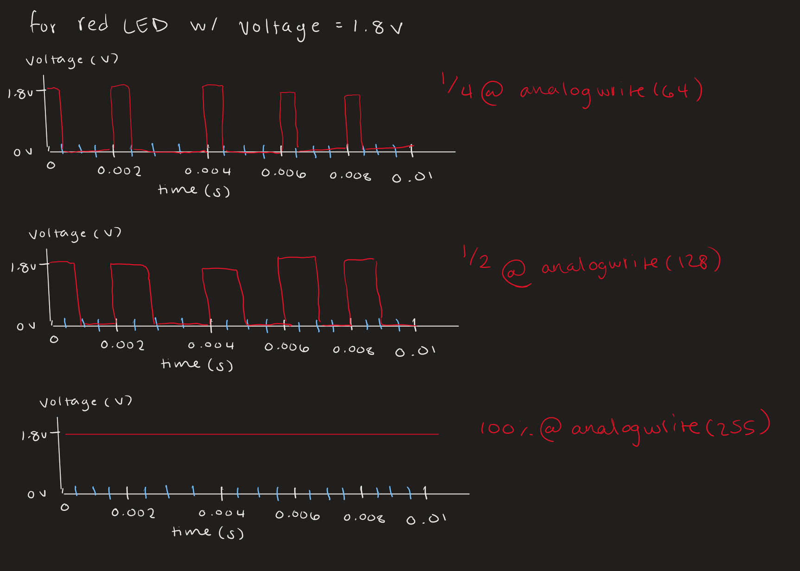

Overview
For this assignment, I created a circuit that fades an RGB LED with the input of a button. First, I decided the resistors I needed for the circuit. Then I set up the circuit for the button and RGB LED and played with some code to make the LED fade in and out, all while correlating with the button state.

I used a 10k resistor for the button based on what we learned in class. For the red and green LEDs, I used a 220 ohm resistor, and for the blue LED, I used a 100 ohm resistor. I chose these resistors based on the LED calculations I did in assignment 1.
Code
Here is the code I used to make the LED blink:
const int buttonPin = 2; // the pushbutton pin
//pins that can take analogwrite
const int R = 11;
const int G = 10;
const int B = 9;
int buttonState = 0;
int lastButtonState = 0;
bool ledOn = false;
void setup() {
pinMode(R, OUTPUT);
pinMode(G, OUTPUT);
pinMode(B, OUTPUT);
pinMode(buttonPin, INPUT);
}
void loop() {
// Read button
buttonState = digitalRead(buttonPin);
// Detect a button press
if (buttonState == HIGH && lastButtonState == LOW) {
ledOn = !ledOn;
delay(50);
}
lastButtonState = buttonState;
// If LED is on, run fade loop
if (ledOn) {
fadeLED();
} else {
// Turn off all LEDs
digitalWrite(R, LOW);
digitalWrite(G, LOW);
digitalWrite(B, LOW);
}
}
// Fade function, breaks early if button pressed again
void fadeLED() {
//red to green
for (int i = 0; i < 256; i++) {
analogWrite(R, 255-i);
analogWrite(G, i);
analogWrite(B,0);
delay(5);
if (checkButtonToggle()) return;
}
//green to blue
for (int i = 0; i < 256; i++) {
analogWrite(R, 0);
analogWrite(G, 255-i);
analogWrite(B, i);
delay(5);
if (checkButtonToggle()) return;
}
//blue to red
for (int i = 0; i < 256; i++) {
analogWrite(R, i);
analogWrite(G, 0);
analogWrite(B, 255-i);
delay(5);
if (checkButtonToggle()) return;
}
}
// checks button mid-fade
bool checkButtonToggle() {
int reading = digitalRead(buttonPin);
if (reading == HIGH && lastButtonState == LOW) {
ledOn = !ledOn;
delay(50);
lastButtonState = reading;
return true;
}
lastButtonState = reading;
return false;
}
Additional Questions
1. This is my graph of the voltage across the LED over time. I chose to represent the red LED, which has a 1.8v drop. This shows how much it drops over time as the color fades.
2. If powered by a 1200 mAH battery, the circuit would last 20 hours. This is because these lights would be run at 20 mA each at once, making a white LED. This means that the total current draw is 60 mA. 1200 mAH / 60 mA = 20 hours.
3. When I measured the actual voltage for the red LED, I got 1.86 volts, which is slightly higher than the expected 1.8 volts which is the theoretical value. This is likely because my LED was consistently changing colors while on.
4. I used AI tools to help me debug code. There was an instance where my button was not turning
the LED off as I wanted it to, so I asked it why that might be happening.
It suggested that I might not be updating the lastButtonState correctly, which
is why I created a helper function.